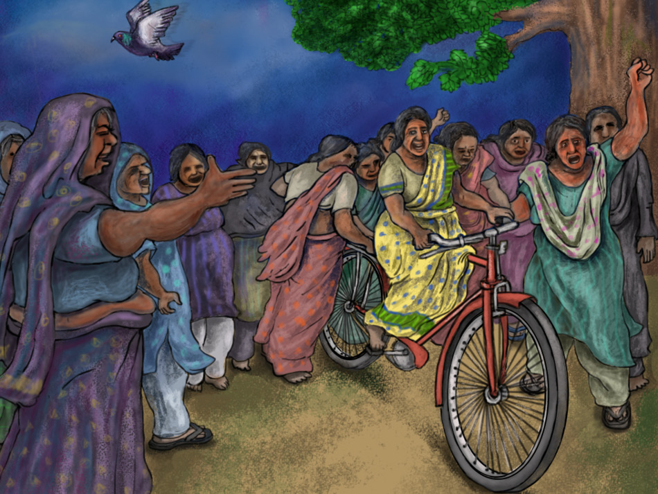

>
Women's Rights
Freedom of Movement

Women in India face restrictions on their freedom of movement, which is an important component of women's empowerment:
-
Mobility
-
According to the National Family Health Survey, only 41% of women in India have complete mobility. Women are most mobile when visiting the market, and least mobile when visiting relatives. Women from urban areas are more mobile than those in rural areas.
-
Asking for permission
- One study found that 71% of Indian women have to ask for permission to leave the home.
-
Household factors
- A woman's relation to the household head is a factor that affects her mobility. For example, daughters-in-law are the least mobile.
The women's movement in India was started to end the oppression of women and bring them liberation. Women were actively involved in the freedom struggle, but discussions about women's issues were limited to reforms like voting rights, education, property rights, and legal equality.